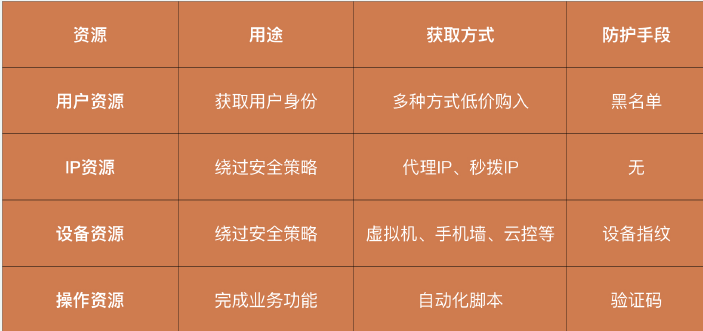
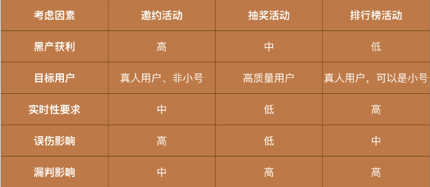
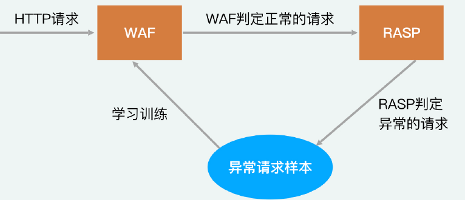

安全攻防技能
23 | SIEM：一个人管理好几个安全工具，如何高效运营？
SIEM（Security Information and Event Management，安全信息和事件管理）
- 通过 SIEM，我们可以将散落于各个系统、设备和安全产品中的日志进行汇总和梳理，快速串联出黑客的完整攻击路径，更高效地完成安全体系运营的工作。
SIEM的定义
- SIEM是一个基于各类日志，提供安全运营和管理能力的统一平台
SIEM的功能
收集日志
- 对 SIEM 来说，需要收集的日志来源于操作系统、路由器、数据库等业务设备，防火墙、WAF、IDS 等安全产品，以及业务前后端本身。
分析统计数据
- 在收集到大量的日志之后，SIEM 会对数据进行分析统计，将海量的日志进行筛选和总结，给予安全运营人员最精简的结果，提高分析效率。
提供完整的运营流程
- 比如，通过工单功能完成安全事件的管理，通过报表追踪各安全产品产生的报警、发起的安全事件、数据的流动情况等，清晰地表现出公司的安全现状和能力。
SIEM的作用
- 有了SIEM平台之后，我们就可以将整个运营工作线上化，大大提升运营的效率和质量
SIEM的落地流程
人工运营
- 经验总结、流程试错
制定计划
- 迭代周期、人力和资源、预期产出
设计阶段
数据、运营、流程需求
详细的需求列表
第一方面：SIEM 需要管理哪些设备，收集哪些数据。
第二方面：安全运营目前遇到的痛点的典型场景是什么，预期的解决方案又是怎么样的。
- 例子
- 一次 Web 攻击要收集的日志有很多：网关上记录的一次 HTTP 请求，WAF 上对应的一次判定记录，服务端可能记录的具体请求参数。如果黑客攻击成功，那么系统上还可能留下一次命令执行的记录。如果我们想要将这些日志进行串联，还原完整的攻击链路，就必须要求SIEM 在各个日志中能记录特殊的标记。在 Web 请求中，这些特殊的标记通常是用户 ID、IP 或者设备 ID 等。
- 更复杂一些的，当 HIDS 发现了一起攻击时，你可能需要回溯黑客是怎么进入系统的，那我们就需要将 HIDS 中的日志，和 NIDS、WAF 等其他日志进行关联。但是，这些日志类型不同，没有能够贯穿始终的标记。这个时候，就需要 SIEM 能够通过额外的信息进行关联。比如，通过登录日志中的用户和 IP 关联 HIDS 和 NIDS 日志等。对这些关联关系的梳理和定义，决定了 SIEM 需要以什么形式存储日志。
第三方面：完整的安全运营流程是什么。
建设阶段
- 敏捷开发、快速迭代
运营阶段
- 实际需求总结，和建设阶段互补
落地过程中的常见问题
垃圾数据太多
- “Garbage in，garbage out”
- SIEM 的本质其实也是一个大数据分析的平台，它同样对数据的质量有着极高的要求。
数据维度缺失
- SIEM 中的数据都是需要长期积累的，某些历史数据一旦缺失就很难有办法补充。因此，经常会出现在使用 SIEM的过程中，我们突然发现某些关键字段缺失，导致事件排查中断。
- 比如，对于一次网络请求，我们可能会记录的日志字段包括：时间、源 IP、目标 IP 等。但是，当出现一起安全事件时，你除了要知道是哪个 IP 发起的请求，可能还需要进一步挖掘是哪个用户或者哪个进程发起的这次请求。这个时候，如果数据维度缺失了，就会出现没有日志可以进行关联的情况，分析运营工作也就无法继续下去了。
人员投入不足
- SIEM 平台实际上是对安全运营工作的一个线上化呈现，而运营工作始终是需要依靠人来进行主导的。
24 | SDL：怎样才能写出更“安全”的代码？
SDL（Security Development Lifecycle，安全开发生命周期）
SDL 中的基础概念
- 软件开发生命周期 DLC（Software Development Life Cycle）
- SDL 是以软件开发生命周期为基础发展成的安全框架
- DLC 将软件开发过程分为 5 个阶段：需求分析、设计、开发、测试和部署。
什么是 SDL？
标准执行流程
7 个步骤：安全培训、需求分析、设计、开发、测试、部署和响应。
图示
安全培训
- 之所以会这么设计，就是因为很多公司都对安全人员给予了过高的期望，认为他们能够解决一切的安全问题，而忽略了对开发、测试、运维等人员的安全意识培训。这就导致安全人员一直处于一个“救火”的状态，无法从根本上杜绝安全问题的产生。
- SDL 中明确提出：开发、测试、运维和产品经理每年至少进行一次安全培训。培训的内容包括安全概念和框架、威胁评估、Web 安全、安全测试以及隐私保护等。
需求分析
- 在需求分析阶段，安全人员提出的防护需求主要包括三个方面。
- 安全标准：为软件制定对应的安全标准。比如，需要对敏感数据进行加密存储、需要进行二次认证等。
- 安全指标：定义软件在上线时需要满足的安全指标。比如，在上线时，软件必须经过安全测试，且不允许存在任何高危漏洞。
- 风险点评估：安全人员会对整体需求进行评估，找出需要对安全性重点关注的部分，也就是风险点。比如某个需求会使用到用户的隐私数据，那么风险点就是这些隐私数据。
设计
- 针对上面整理出的三个方面的安全需求，我们也需要在设计环节中，给出具体的实现方案。
- 为安全标准确定具体的实施方案。比如，对敏感数据作加密存储，那么，具体的加密算法是什么，密钥怎么生成和存储，都需要在设计阶段确定方案细节。
- 安全指标的响应方案则是在软件开发方案中，尽可能地考虑安全问题，降低可能出现风险的概率。比如，依据最小权限原则，明确软件每个用户和角色能够进行的操作。或者确定审计需求，明确各个阶段需要记录的日志及时发现攻击行为。
- 对于需求阶段定义的风险点进行完整的风险评估。依据识别数据、攻击和漏洞的方式，明确需要采取的安全防护机制，提升这些关键风险点的安全性。
开发
- 限制开发人员使用的工具和方法
- 对产出的代码进行定期的安全审查
测试
评估软件是否符合当初的安全设计方案
进行动态的安全测试
- 执行漏洞扫描
- 进行模糊测试
部署
- 做好安全预案
响应
- 软件上线之后，安全人员所需要做的，就是及时响应和处理安全事件。
如何推动 SDL 落地？
- 我们要基于现有的制度拓展 SDL。
- 不要从零开始强推 SDL，应该循序渐进，先定义好普通软件开发的制度，再加入安全元素。
- 我们在落地 SDL 的时候要灵活变通，不要生搬硬套。
- SDL 的执行流程非常厚重，如果我们严格按照 SDL 的标准流程执行，在软件开发的每个步骤中加入一定的安全工作，这无论对谁都是不小的负担。所以，我们要根据公司的实际情况灵活变通。
- 将安全培训加入到公司定期举办的内部技术交流分享会中。这样一来，既不会因为强制培训的要求引发开发人员的不满，又能提升培训的效果。
- 在制定安全方案的时候，将安全扫描加入到开发提交代码、检测代码质量的过程中，这样就能避免开发人员更改开发流程。
- 在 SDL 的覆盖面上，我们也可以有所取舍。
- 每个公司都有大大小小的多个业务线，让每个业务线都严格遵守这个 SDL 流程，是很难实现的。因此，对于一些量级小、敏感数据少的业务，我们可以适当降低安全标准。
- 以开发设计环节为例，我们可以不需要根据具体业务提出具体的安全需求，而是梳理出一份包含常见的安全设计方法的通用列表（包含认证规范、加密标准等）。然后，直接将这个列表发放到开发人员手上，让他们自评。这样既提升了开发人员的工作效率，又降低了我们的工作量。
25 | 业务安全体系：对比基础安全，业务安全有哪些不同？
如何理解业务安全？
黑产
- 黑产是基于正常的业务产品逻辑，采取非正常或者批量的操作，来获取利益的行为。
业务安全
- 通过各类产品策略，来对黑产进行识别和拦截，从而保障业务的正常运行。
例子
你一定见过，或者参加过“红包雨”领红包的活动。在活动中，用户可以通过“红包雨”游戏领取一定金额的红包，金额大小由前端决定。
黑客如何攻击
- 在基础安全的攻击视角中，黑客会逆向前端代码，找到最终决定金额的逻辑，然后自己伪造一个大额的红包请求。这样一来，黑客就可以不用玩游戏，同时还能获得一个大额的红包。
黑产如何攻击
- 黑产会开发一个自动玩游戏领红包的工具，操纵大量的账号来参与活动。最终，将各个账号的小额红包汇总到一个账号下，从而实现获利。
黑产和黑客有哪些差异？
第一，“黑产”强调的是“产业化”。
- 尽管黑客也存在很多组织，但黑客组织更多的是将一群黑客进行统一管理，实际发起攻击的仍然是单人或者小组。
- 相比于黑客，在业务攻击中，黑产已经形成了完整的产业化链条：在上游，有人专门提供各类技术支持，如验证码绕过、手机群控、自动注册工具等；在中游，有人专门收集大量的手机号、身份证号、银行卡号等信息，在应用内注册大量的垃圾账号；在下游，有人利用工具和账号，进行薅羊毛、刷评论、欺诈等操作。可以说，任何个人或者小的团体都没有办法发起业务攻击，必须依靠上游提供的各类资源，才能够实现真正获利。
- 产业链的结构
第二，黑客强调的是技术对抗，而“黑产”更看重资源对抗
对于黑客来说，只要技术足够强大，并且手里掌握着一些“0 day”漏洞，就能够以一己之力攻破公司的安全防御体系。但是对于黑产来说，其本质是资源对抗，所以不可能有类似黑客的“单兵作战”。
例子
- 我们来看一个例子。现在有一个“新用户注册得红包”的活动，公司可能会给每个新用户发放 1 元的现金红包，以此作为用户增长的激励措施。这个时候，如果黑产注册一个新用户的成本是 2 元（需要手机号、银行卡等各种资源支持），那显然是一个亏本的买卖。因此，黑产需要想尽办法去降低注册资源的成本。以前，你想要骑一辆自行车，需要花几百块钱买一辆。而现在，你花上一块钱，就能够骑上共享单车，还能够“随停随走”。黑产的资源对抗也是利用的这种“共享”思想：在黑产的中上游，由专门的团伙负责大批量收集各类资源，供很多下游团伙使用，这样就能在很大程度上降低黑产发起攻击的成本。
现在，黑产购买一个手机号的成本只需要几毛钱，而互联网应用获取一个新用户需要花费几十元，这其中的利益之大可见一斑。
从黑客与黑产之间的攻击差异中，我们能够发现基础安全和业务安全的核心差异。基础安全是防御黑客的技术攻击，避免漏洞。业务安全是防御黑产的资源对抗，避免正常业务被攻击。
业务安全的防护
用户资源
黑产通常需要获取大量的用户身份，来进行大规模的业务操作，才能实现获利。这是因为，应用通常会要求用户绑定各种信息，比如手机号、身份证、银行卡等。而黑产需要满足应用的强制绑定要求，才能获得用户身份。因此，这些手机号、身份证以及银行卡等，其实就是黑产必须投入的用户资源。
资源常见的获取方法
- 通过虚拟运营商或者物联网卡来获取大量非实名手机卡
- 在网上搜集各类泄漏的身份证图片
- 在偏远地区支付十几块钱，买到他人的手持身份证照片和视频
- 在类似注册任务贴吧这样的任务群中，注册一个账号之后，再转手卖给黑产
对于用户资源的对抗，目前主要的方式就是黑名单。
黑名单防护流程
其中，内部收集是基于用户在业务内部的行为进行判定的，流程相对复杂一些，而外部采购是直接购买汇总好的黑名单。这样一来，我们就利用黑名单实现了对黑产的拦截。
IP资源
- 黑产往往是在同一个地方进行大量操作的，IP 相对固定。所以，任何公司做业务安全的第一步，都是对 IP 进行限制，常见的手段是限制一个 IP 下能够登录的用户数量。为了绕过这种安全防控机制，黑产必须掌握大量的 IP 资源。
- 黑产会利用“秒拨 IP”来获取大量 IP 资源。所谓“秒拨”，就是指每一次拨号上网，都会分配一个新的 IP 给我们。只要持续地断网、拨号，我们就能够获得大量的
IP 资源。 - 事实上，我们目前很难对 IP 资源进行有效防控。IP 的变化十分频繁，一个 IP 上一分钟可能是黑产在操作，下一分钟可能就被正常用户所使用了。所以，即使我们能基于业务数据确定一个 IP 存在异常，也没有办法对它进行黑名单处理。
设备资源
- 在正常情况下，一个设备对应一个账号。但是，黑产可能会需要在一个设备上使用几十个账号进行操作，这就很容易被应用和公司检测到异常。因此，黑产必须想办法获取大量的设备。
- 黑产获取设备的方法比较多，最简单的一种是通过模拟器来模拟设备。但是，很多公司会对前端进行检测，来发现模拟设备。因此，黑产也就从使用模拟设备升级为使用真实的手机。所以，很多黑产案件中都会出现由大量手机设备组成的“手机墙”。除此之外，也有上游团队将手机做成云控模式，下游黑产可以直接花钱购入可远程操控的真实手机设备。
- 设备资源的对抗原理是对虚拟设备进行识别。
- 这就需要依赖业务安全中比较关键的设备指纹技术了。所谓“设备指纹技术”，就是收集设备上的各类特征，对设备进行追踪，然后基于设备的行为和信息，判定是虚拟设备还是人为操作，以此对黑产进行拦截。
操作资源
- 黑产需要正常使用业务才能获利，所以在操作上会和正常用户一样花费时间和精力。这对黑产来说，也是一个不小的成本。
- 比如说，在开头的例子中，用户参加“红包雨”游戏领取红包的过程，就是一个操作的过程：用户为了领取一个几毛钱的红包，在 APP 上花几分钟玩一个游戏。这显然对黑产是不合算的。因此，黑产会尝试使用一些自动化的工具，比如按键精灵，让机器来完成游戏的过程。这样一来，黑产就释放了人力的操作资源投入，大大降低了操作成本。
- 所以说，我们和操作资源的对抗，就是在和黑产的自动化工具进行对抗。公司为了区分“人”和“机器”的操作，就需要使用验证码（如图片验证码、滑块验证码等）。通过这类“人”很容易完成，但“机器”很难完成的验证方式，黑产就没办法全自动地完成交互，我们也就提高了黑产的操作成本。
总结
- 
26 | 产品安全方案：如何降低业务对黑灰产的诱惑？
业务安全中的防御框架
我们可以通过 NIST 的安全框架 IPDRR，在基础安全中构建出一道比较全面的纵深防线。在业务安全中，IPDRR 同样可以指导我们与黑产进行对抗。
IPDRR 在基础安全和业务安全中的异同点
Identify（识别）
- 我们需要找到黑产可能获取到的业务逻辑中的投入成本，比如，应用发放的红包、优惠券等。
Protect（保护）
- 在业务安全中，我们是通过产品方案来实施认证和授权过程的。比如，对于登录过程增加双因子认证和验证码等，就是加强认证的安全性。
Detect（检测）
- 检测阶段主要是风控系统发挥作用。
Respond（响应）
- 发现黑产的攻击后，我们可以通过封禁账号、拦截操作、拒绝提现等方式，来阻止黑产获取利益。
Recover（恢复）
- 最后就是对整个系统进行恢复了。在业务安全中，黑产可能已经盗取了某些账号，或者已经领取了部分红包。这时，我们就需要通过合适的运营机制，将账号返回给原用户，把红包退回到奖金池中。
业务安全中的威胁评估怎么做？
在识别过程中，我们的主要工作就是威胁评估。在业务安全中，黑产的最终目的是窃取公司投入的成本来获取利益，但公司成本的具体表现形式很多，因此，业务安全中的威胁评估也更加复杂。
例子：一个典型的业务场景
场景描述
- 最近比较流行的邀约活动，几乎所有的 App 都会在拉新阶段开启各种各样的邀约活动。而且对于这类能够刺激用户增长的活动，公司都很舍得投入大量的资本，因此邀约活动是黑产聚集的“重灾区”。
- 邀约的逻辑：已注册用户可以通过邀请码的形式邀请新用户注册，注册成功后（可能需要新用户完成一定任务）双方都可以获得一定的奖励，如现金红包（可以参考拼多多）。
- 邀约活动的目的很明确，就是拉取新用户为公司带来用户增长。那对黑产来说，获利的方式就是通过大量注册小号，完成邀约任务，获得现金红包的奖励。现在的奖励金额一般是几块到十几块不等，因此，黑产的利润很高。
这个时候，如果公司想要拦截邀约活动中的黑产用户，需要考虑哪些因素呢？
实时性要求
- 选择拦截黑产的时机是非常重要的。一般来说，拦截时间越靠前就能越早拦截黑产，但是误伤对用户体验的损伤也越大，而拦截时间越靠后风险越小。除此之外，我们还要考虑业务的逻辑。比如，对于邀约活动来说，红包提现一般都需要审核。因此，我们不需要在邀约活动中实时拦截，只需要在提现的时候进行拦截即可。这样的拦截方式风险更小、效果更好。
漏判影响和误伤影响
- 我们在指定业务安全防控策略的时候，漏判影响和误伤影响决定了策略的严格程度。如果漏判影响更大，就需要制定更严格的策略对黑产进行控制；
- 如果误伤影响更大，策略要相对宽松，有的时候我们甚至可以放过一定的黑产来降低误伤。
- 对于邀约活动来说，在黑产刷走大量现金之后，漏判影响是指公司有大量的资金损失。这对公司来说并不致死，因为用户的正常邀约行为不会受到黑产影响。
- 误伤影响比漏判影响严重的多，误伤一旦出现，就会让用户对邀约活动的真实性产生质疑。如果你做过业务，一定知道，用户的信任是很难培养的。而一旦丧失了用户的信任，业务基本也就失败了。因此，公司基本不容许出现误伤的拦截。
- 总之，对于邀约活动的业务安全防御来说，避免误伤是我们最核心的关注点。为了避免误伤，我们可以将防御机制延后，避免对用户正常参与活动的流程产生影响。同时，我们可以将防控策略放宽，通过放过一定的黑产来降低误伤。
当然，还有很多其他类型的业务和活动，比如，微博中常见的排行榜、支付宝的集福抽奖活动
三种业务场景的威胁评估结果
- 
如何利用产品方案防御黑产？
二次验证机制
- 在登录业务中，我们需要防止盗号的发生。这种情况下的安全产品方案就是提高黑产发起盗号的资源成本，比如，我们可以在产品机制上加入二次验证机制，如短信验证等。这样一来，黑产需要完成一次登录的成本就大大增加了。
例子：“满减红包”
“满减红包”是各类电商、O2O 领域中最常见的促销手段。但是这种促销手段，很可能因为产品方案不当引来黑产的攻击。比如，前两年“饿了么”对新用户的补贴较多的时候，就有人利用新用户的大额红包代下单外卖，实现获利。
“满减红包”常见的维度
- 领取条件：注册就给红包，会给与黑产极大的便利。而下单后再减，能刺激用户再消费，有了前一单的收益，下一单的红包补贴就基本不会亏。当补贴减少时采取会员制，公司就能通过会员费来增加额外的收入。
- 满减金额：满减条件同样是需要慎重把握的一个方案。满 10 减 10，相当于不需要黑产付出任何成本。一旦变成满 10.01 减 10，效果就天差地别了。想要支付这多出的 1 分钱，黑产必须进行一个完整的支付流程，必须绑定银行卡等其他支付方式，这些都是额外的成本。而满 30 减 10，对公司来说应该是稳赚不赔的，也就不需要考虑漏判的风险。
- 有效期：有效期过长同样会给黑产带来便利。因为黑产售卖“满减红包”或者“代下单”，是需要时间来找买家的。所以，有效期越长，黑产卖红包的时间就越长。如果把有效期设为 2 天，黑产就很有可能面临优惠券卖不出去而过期的风险，收益就会大大降低。
平台是如何限制“代下单”这种行为的呢？
- 最常见的，当饿了么下单的手机号变更时，是不允许使用之前的红包的。而且，饿了么也不允许备注中出现手机号。这些产品方案其实都是在提高黑产“代下单“的成本。
提升应用安全性的产品方案常见例子
- 在邀约活动中，我们可以适当增加用户任务的难度，如必须连续活跃三天用户才能得到收益；在抽奖活动中，我们可以增加参与抽奖的门槛，如必须是注册一个月以上的老用户才能参加；在排行榜活动中，我们可以将排行榜的计算规则隐藏，让黑产摸不清刷的方式。这些常见的安全产品方案可以提升黑产攻击业务的成本，让业务更安全。
总结
- 在业务安全中，NIST 的安全框架 IPDRR 可以指导我们与黑产进行对抗，实现全面防护，避免安全短板的出现。
- 识别和保护是 IPDRR 中的前两个步骤，主要的工作是进行威胁评估和制定安全产品方案。其中，威胁评估的主要过程其实就是基于业务形态，对黑产可能的获利点、业务的目标用户、安全的实时性要求、策略的误伤和漏判影响进行综合的评估。
- 评估完成之后，你就能够知道，业务安全的目标和要求是什么。安全产品方案则是提高黑产资源成本的第一道防线，通过适当地增加用户操作的复杂度，来提高黑产的各类资源成本。安全产品方案实现起来比较简单，且没有误伤和漏判，是业务安全中十分简单有效的一环。
27 | 风控系统：如何从海量业务数据中，挖掘黑灰产？
背景
- 仅靠产品方案是没办法完全抵御黑产的。因为在产品方案中，我们还需要对用户体验进行关注
- 比如说，为了拦截黑产盗取他人账号登录，或批量登录自有账号的行为，我们的产品方案可能是，通过加入短信验证、人脸验证和滑块验证来提高登录的门槛。当你在登录一款应用的时候，如果需要进行两次甚至是三次的验证操作，那么，这种糟糕的体验感很有可能驱使你放弃使用这款应用。
- 为了解决这个问题，在业务安全中，我们会采取折中的方案：如果识别到一次登录行为是异常操作，那么就弹出多次验证；如果识别是正常操作，就让其用简单的用户名密码登录即可。
- 对于一款热门的应用来说，一天可能要面临上亿次的登录行为。这其中有正常用户的登录行为，也有黑产的登录行为，我们应该如何从海量的登录数据中准确地判定它们呢？这就是IPDRR 中的检测，也就是我们常说的风控系统需要完成的事情。
风控系统
定义
- 风控系统就是从业务数据中挖掘出黑产行为的数据分析系统
风控系统对比产品方案
- 产品方案抵御黑产的方式，是普适性地提高用户的使用成本，不区分用户是否是黑产。因此在产品方案中不存在数据挖掘和分析的工作
- 在风控系统抵御黑产的过程中，为了不增加正常用户的使用成本，我们必须对黑产用户进行区分，然后告诉业务只对黑产进行拦截，放行正常用户。而区分黑产就需要对海量的业务数据进行分析和挖掘了。
产品方案属于事前的防控，是从根本上提高黑产操作的成本；风控系统属于事中的防控，是在检测到黑产行为时才进行拦截。
风控流程
- 目前，风控系统的整体框架已经基本成熟了，各个公司的风控系统也都大同小异。一般来说，一个完整的风控系统框架应当包括前端 SDK、规则引擎和验证流程。但是，一个完整的风控流程还需要人工进行数据分析、处理用户投诉、监控舆情，并采取应急响应机制。
风控系统如何利用前端 SDK 采集数据？
想要在风控中做好数据分析，数据当然是越多越好。我们只有尽可能多地采集各类用户的数据，才能够更准确地识别黑产。各类用户数据包括用户身份信息、行为记录、设备类型、鼠标或者屏幕点击轨迹等。
但是，业务在正常的开发过程中，一般不会采集和业务无关的数据（比如设备相关的信息）。为了解决这个问题，风控系统通常会提供一个前端 SDK。前端 SDK 由业务集成在前端应用中，它可以采集各类前端数据，如手机型号、硬件类型等。
图示
除此之外，前端 SDK 还会计算出一个唯一的设备指纹，通过这个设备指纹，我们就能够实现对设备行为的追踪。
规则引擎如何帮助风控系统识别黑产？
- 采集到业务数据之后，我们就要对其中的黑产进行识别了。在风控系统中，一次操作行为是来自黑产还是正常用户，是由规则引擎来决定的。
- 规则引擎会接收到业务提供的原始数据，而想要从中识别出黑产，我们首先需要通过一些统计手段找到其中有用的特征。
- 举个例子，想要从登录行为中识别出黑产，仅仅知道设备指纹是不够的，我们还需要知道，这个设备在最近一段时间内发起了多少次登录请求。这就是特征提取需要进行的工作了。
- 经过特征提取得到特征之后，我们就需要制定规则对登录行为进行判定。比如说，我们可以定义，一个设备在 1 分钟内登录 5 次的行为属于异常行为，应当进行拦截。这样一来，当有新的登录行为发生时，通过规则引擎，我们就可以直接判定其是否为黑产
- 规则引擎的识别过程
如何做好一款规则引擎呢
关键在两个方面：采用正确的工作模式、设计高效的规则管理功能。
- 正确的工作模式
规则引擎可以分为同步、异步和离线三种模式。
同步模式
- 在同步模式下，用户输入完用户名密码之后，需要先经过规则引擎的判定，只有正常用户才能够正常登录，黑产则直接被拦截，不允许登录。
- 同步模式需要侵入到业务的正常流程中，这对于业务来说，一方面会产生较高的接入改造成本，另一方面，也给业务的正常运行带来风险。因此，我们经常会遇到业务不接受同步模式的情况。
- 其次，实时性越高，我们获得到的信息就越少。以登录的场景为例，同步模式下的拦截行为发生在成功登录之前，所以，我们无法知道用户名密码是否正确。异步和离线是事后的分析，所以我们能够知道用户是否登录成功。显然，连续登录失败比连续登录成功更可疑。因此，用户是否登录成功这个信息，对于我们提升识别准确率会有很大的帮助。
异步模式和离线模式
- 在异步模式下，用户一开始是可以正常登录的，登录后才交由规则引擎判定，如果最终确定是黑产，则会被封号或者踢出登录状态。
- 离线模式的效果和异步模式一致，不过异步模式通常会在几秒到几分钟的时间内完成判定和处罚，离线模式则需要几小时甚至一天的时间才能够完成判定。
- 而实时性越低，我们和黑产的对抗优势也就越多。通常来说，离线模式能慢慢处理和运行几天甚至是几个月的数据。而数据越多，规则引擎的准确率和召回率也会越高，所以我们的优势也就越多。
- 即使是使用同步模式，我们也需要使用异步和离线模式做数据分析和规则验证，这样才能保障同步模式的判定结果不会出现太大的误伤。
图示
在大部分情况下，更推荐使用异步或者离线模式，仅在部分没办法做事后的拦截和处罚的业务场景中，我们才会使用同步模式。
举个例子，在提现操作中，提现成功后，钱就已经从公司转移到黑产手里了，我们没有办法追回，因此我们必须采用同步模式，在提现操作前对黑产进行拦截。
2.高效的规则管理
- 同步、异步、离线其实都是数据分析工作中常见的模式，已经有很成熟的工具来为它们服务了，比如：通过 Redis 完成实时计算；通过 Flink 完成异步计算；通过 Hive 完成离线计算等。因此，规则引擎不存在技术上的独特性。
- 规则管理有较高的复杂性和独特性。换一句话说就是，想要新建一条规则并执行是一件很容易的事情，但如何高效管理成百上千的规则，让风控人员和业务人员能够清晰地看到每个规则的效果、准确率和实际意义，是一个很有挑战性的工作。
- 例如最出名的开源规则引擎Drools，Drools 定义了一套自有的 IF 匹配语言DRL，并提供了基于Rete 算法的高效规则执行功能。然而，Drools 并没有提供十分高效
的规则管理工具。 - 而高效的规则执行功能所能带来的性能提升，其实并不会特别明显。因为规则引擎的复杂度其实在于特征提取。特征提取完成之后，规则管理基本就是简单的 IF 匹配了。因此，作者认为 Drools 并不是一个适用于风控系统的规则引擎。
- 除了 Drools 之外，部分规则引擎也会尝试使用 Web 界面的方式来降低规则管理的复杂度。比如，在一些开源的风控系统中（比如Nebula），我们可以看到各种用来增加修改规则的 Web 页面。
- 但是，各个公司的规则形式，以及各个业务对规则的理解都不尽相同，因此，你在使用这些开源风控系统的时候，总会有部分需求无法实现。所以，我才说“规则管理需要较高的灵活性才能够适用于各个业务”。而矛盾的是，灵活性过高又会大大提高规则管理的复杂性，因此，我们必须慎重把握规则管理的灵活性。
- 目前来看，我觉得比较好的解决方案是，使用Aviator、QLExpress、Groovy等在Java 中提供动态开发支持的语言，来进行底层的规则执行，在此基础之上，我们再去封装自己理解的规则管理。这样一来，我们就实现了灵活性和复杂度的平衡。
- 图示
总结来说，规则引擎是风控系统的核心。想要做好一个规则引擎，我们需要思考清楚两件事情：第一，规则引擎以什么样的模式接入业务；第二，如何进行规则管理。

风控系统为什么需要经过验证流程才能拦截黑产？
- 为了避免误伤
- 比如说，当用户因为忘记密码多次登录网站失败的时候，网站就会怀疑这是黑产在进行操作。这个时候，我们如果直接拦截，就会收到大量的用户投诉。
- 为了解决这个问题，风控系统中加入了验证流程。采取适当的验证流程，我们可以降低拦截机制对用户体验的影响。所以，在上面的例子中，网站会使用滑块验证码来验证你是否是黑产。
- 基于业务场景的不同，验证的方式还有很多，比如，核验身份的短信认证、人脸识别，区分人机的图片验证、滑块验证等。很多应用都会对存疑的用户和行为施加各种验证流程，来保障用户身份的真实可靠。所以，为了让风控系统成功落地，验证流程是我们不能忽视的一个环节。
有哪些风控人员？
策略人员
- 在规则引擎中，策略人员需要对业务的数据进行分析，产出准确的规则和模型。而且，随着和黑产的对抗升级，策略人员还需要对规则和模型不停迭代。
运营人员
- 除了数据分析和规则迭代以外，规则引擎的“误伤”也必然会导致部分用户的不满和投诉。因此，运营人员需要对投诉情况进行处理和监控，避免风控系统出现大规模的“误伤”。
应急响应人员
- 最后，对于大规模误伤或者漏洞造成的严重影响，应急响应人员需要及时跟进处理，来进一步减少业务的损失。
总结
- 一个完整的风控系统需要结合业务全流程。
- 前期需要通过前端 SDK 采集设备数据，然后结合业务的离线数据，由算法或者策略人员进行数据分析，整理出具体的规则。接着，通过同步、异步或者离线的方式和业务进行对接，并基于规则对业务数据进行判定。
- 如果发现了黑产的用户和行为，风控系统还需要提供对应的验证流程，来降低对用户体验的损伤。最后，风控系统还需要保持对用户客诉、黑产舆情的监控，及时发现、响应和处理风险，降低业务的损失。
- 规则引擎作为风控系统的核心，主要分为特征提取和规则管理两个部分。特征提取可以依靠现有的各类大数据处理框架实现。规则管理则因为各个公司和业务对规则的复杂度和灵活度要求不同，很难有非常合适的解决方案，需要我们根据不同的情况灵活调整和实现。
28 | 机器学习：如何教会机器识别黑灰产？
背景
- 通过建立一个成熟的风控系统，你能够快速建立起和黑产进行持续对抗的稳固防线。但是，风控系统和规则引擎仅仅是一个平台和工具。想要真正对黑产进行识别，我们还得依靠规则引擎中运行的规则策略。
- 当然，规则的维护主要是依靠人力来进行的。但是这样的维护方式会有两个弊端：首先，人的工作效率会受各种因素影响，所以对抗的实效性很难保障；其次，规则的维护受到人的主观意识的影响，可能会产生一些“偏见”。
- 对于上述这两个问题，机器学习是一个理想的解决方案。因为，机器学习不仅可以无休止地工作，还会完全依据客观事实产生结果。
- 而且，机器学习对于基础安全来说，同样是一个提升规则维护效率的理想方案。因为各类防御工具（如：防火墙、IDS、WAF 等）也都是基于规则来运转的。
机器学习
误区
- 认为机器学习无所不能
作用
通过找出未知的规则参数来区分已知的行为
举个例子
- 在生活中，我们能够快速地分辨一张图片是猫还是狗。我们是怎么进行识别的？根据五官、颜色还是形状？仔细回想一下，你就会发现，我们往往是根据经验来判断的，很难用文字描述出准确的判断依据。
- 同样地，对于一次请求或者操作，我们通常能够依据经验判定其是否是安全攻击。但是判定的依据具体有哪些，往往说不清楚。在这种情况下，机器学习就可以帮助我们将脑海中的模糊经验，总结成客观的规则参数，从而挖掘出恶意的攻击行为。
特点
- 机器学习实际上是对人为经验的一种总结，并不具备创新的能力，所以最终对抗效果的好坏，还是取决于人的对抗能力
无监督学习在安全中的应用
原理
- 挖掘数据的分布特征，主要包括数据的聚集特征（也叫聚类特征，是通过聚类算法获得）和分布规律（也叫离群点，通过时序算法获得），根据这些特征发现的异常情况进行人工分析.
- 因此，如果想使用无监督学习来判定正常和异常行为，我们就需要对行为的整体分布有一个先验假设，常见的如：正常行为由正常用户产生，行为各有各的不同；恶意行为是少数人批量产生，行为会比较相似。
作用
- 通过应用无监督学习，我们能够发现整体数据中的异常情况，然后可以根据相应的报警去人工分析疑似异常的数据
特点
- 这些特征和规律能够帮助你发现异常的情况，但是不能帮你定位异常的能力
有监督学习在安全中的应用
有监督学习的基础是标签数据，标签就代表着已知。所以，有监督学习的最大作用就是用来挖掘“已知的威胁”。如果想要保持和黑灰产的持续对抗，我们就必须不断地生产标签数据（也叫“打标”），供有监督学习的算法来学习。但是，依靠人工去生产标签数据是不可行的。
主要有三方面原因
第一，时间成本高。
- 在图片识别等领域，对一个图片“打标”只需要一个普通人花几秒钟的时间。但是对于一个安全类的数据，一个安全人员可能需要花费几十分钟甚至几个小时，才能够确定这次行为到底是不是恶意行为。
第二，覆盖面不全。
- 由于时间成本高，我们无法进行全量数据的“打标”。而且人是存在懒惰心理的，因此人为“打标”时，总是会倾向于优先处理相对明显的数据，那么相对隐秘的攻击行为，就很容易在“打标”过程中被忽略。
第三，标准偏差。
- 恶意与正常往往没有明确的界限，不同的安全人员对于安全的认知和要求也不同。比如，一次简单的端口扫描算不算恶意行为呢？一个专刷明星的帐号算不算垃圾账号呢？不同的人会有不同的判断，这种判断标准的偏差会导致最终产生的标签数据分布不一致，这对机器学习的结果也将产生较大的影响。
什么是高效的打标方案
在基础安全领域中，黑客的最终目的无非是获取数据、篡改程序、拒绝响应等。所以，我们其实可以通过数据的 CIA 是否受到影响来进行标记，获得最终的判定标签，然后将标签进行回溯，从而获得表层的标签数据。
举个例子，WAF 是通过获取 HTTP 相关的数据（如：路径、参数、header、ua 等）来找出恶意的 HTTP 请求，从而对 Web 攻击进行检测拦截的。但是 WAF 并不知道这个请求具体会干什么，执行什么样的逻辑，所以它的评判标准只能是“带有 XXX 特征的请求是恶意请求”。如果想持续不断为 WAF 提供标签数据，靠人力肯定不行，我们应该深入追踪下去，以最终结果对数据进行自动“打标”。
RASP 的检测思路正是如此，就是直接深入到 Web 程序的逻辑，根据运行情况去评判该请求是否是攻击行为。因为是对 HTTP 请求的最终行为进行评判，所以 RASP 可以实现所谓的“无规则检测”，准确率和召回率都有保证。
闭环
- 
业务安全其实也可以尝试同样的思路来生产标签。比如，我们可以通过对接口签名校验、虚拟设备判定等方式，对异常的行为进行标记，作为业务安全中标签数据的来源。在此基础之上，我们再使用有监督学习算法去学习异常行为的特征，让业务风控的机器学习算法能够不断更新和迭代。
原理
- 利用高效的“打标”方案持续生产标签，供有监督学习的算法来学习。
作用
- 发现“已知的威胁”
特点
- 在业务安全中，不建议直接根据标签数据进行拦截。一旦拦截，生成标签的指标就会暴露，就会促使黑产进行研究和对抗，标签的准确性就会受到影响
29 | 设备指纹：面对各种虚拟设备，如何进行对抗？
背景
- 有一句话说“数据和特征决定了机器学习的上限，而模型和算法只是逼近这个上限而已”。这句话在风控系统中同样适用，因为风控系统本质上也是一个大数据分析系统。所以，收集更多的数据是提升风控能力的一项核心工作。
- 随着手机和人的关系越来越紧密，通过手机对用户行为进行追踪和判定的方法，已经成为风控系统中识别黑产的主要手段。设备指纹是用来标识手机或者浏览器的唯一 ID，我们能够通过这个 ID 关联到手机或浏览器相关的全部数据。因此设备指纹是风控系统中最核心的数据来源。
设备指纹定义
- 设备指纹是用来唯一标识手机或者浏览器的ID，是风控系统中最核心的数据。
优势
- 唯一性高、稳定性强、信息丰富
挑战
稳定性
设备重置之后，保持设备指纹不变
- 恢复出厂设置是所有智能设备的标配功能，设备重置之后，系统自带的设备 ID 必然会发生变化，理论上来说就是“新设备”了。
- 所以，如果只是使用系统自带的设备 ID，黑产完全可以通过不断恢复出厂设置模拟大量的设备，来绕过风控系统的检测。因此，如何在恢复出厂设置的情况下，仍然保持设备指纹的稳定不变，是设备指纹技术的主要挑战之一。
设备更新之后，保持设备指纹不变
- 既然无法直接使用自带的设备 ID，那我们就必须基于各类设备信息综合计算出设备指纹。但是，我们平时在使用智能设备的时候，不仅会有意或无意地变更设备名称、网络环境、位置等信息，还会更新操作系统，系统版本、应用版本等特征也会随之改变。这都会影响到设备指纹的计算。
- 知道了设备更新能影响设备指纹的计算，黑产在进行欺诈行为的时候会更加极端，它们会更换部分硬件去尝试伪造新的设备，比如，摄像头、音响等相对容易拆卸安装的部分。因此，如何在一定程度上兼容设备的变动和更新，也是设备指纹需要考虑的问题之一。
唯一性
- 避免两个不同的设备产生相同的设备指纹
- 比如，如何准确地区分同型号的设备，也是设备指纹需要满足的要求之一。所以，唯一性是避免误伤真实用户的关键维度。
设备指纹的信息采集
软件ID
- 包括 iOS 设备的 IDFA、IDFV、Android 设备的 IMEI、MAC
- 唯一性和稳定性较高
- 但是，操作系统为了保障用户隐私，对 APP 的权限做了较多的限制。比如，用户可以自主选择禁止 APP 获取到这些 ID，重置手机也会同时重置这些 ID 等。
- 而黑产也会利用这一特性，绕过 APP 厂商的识别策略。比如，黑产可以在苹果系统中直接设置不允许获取 IDFA。这样一来，APP 厂商的风控系统就没有办法通过设备维度关联黑产行为了，也就无法识别单一设备批量操作的攻击行为了。
软件静态特征
- 操作系统和APP本身的各类基本信息，比如：操作系统版本、手机名称、APP版本等
硬件静态特征
- 设备的各类硬件信息，比如：主板、CPU、摄像头等相关型号信息
- 正常用户基本不会去替换设备上的各个硬件，因此硬件静态特征具备较高的稳定性。
- 但同一型号手机的硬件配置是一致的，所以，硬件静态特征在唯一性上相对欠缺。因此，通过硬件静态特征，我们无法很好地区分同型号的设备。
硬件动态特征
- 硬件的一些动态执行层产生的特征。比如：加速度传感器的偏差等
设备指纹的 ID 计算
采集设备信息
- 软件ID、软件静态特征、硬件静态特征和硬件动态特征
计算相似度
- 实现算法：简单的包括欧式距离、马氏距离、联合概率分布等；相对复杂的包括 MRF、BP算法等
设定阈值
当两组数据的相似度达到这个值之后，就可以判定这两组设备数据本质上都是同一台设备产生的
设定阈值的依据，就是黑产伪造新设备的 2 种方式：
- 重置设备：手机在重置后，虽然设备 ID 改变了，但是大部分的硬件相关信息仍然保持不变；
- 更新设备：如果更新系统信息，那么设备 ID 和硬件信息等仍然保持不变；如果替换部分硬件，那么系统信息和配置等仍然会保持不变。
分配设备指纹
- 如果判定这两组数据属于同一台设备，我们就分配相同的设备指纹。如果属于不同的设备，我们就为新采集的数据生成新的设备指纹
- 如果判定这两组数据属于同一台设备，我们就分配相同的设备指纹。如果属于不同的设备，我们就为新采集的数据生成新的设备指纹
识别异常设备
系统信息识别
- 利用一些系统的默认参数，也就是系统信息来识别，比如：某些不存在的设备型号等
- 通过Android 虚拟机中的部分设备信息，可以看到设备型号是 x86（市面上不存在 x86 的安卓手机），序列号是 EMULATOR 开头。因此，一旦在设备指纹中出现了这些信息，我们就能够判断当前的运行环境是一个虚拟机了。不过想要修改系统信息十分容易，因此大部分黑产都能够绕过基于系统信息识别的检测方法。
硬件识别
- 虚拟机和真实设备的最大区别就在于，虚拟机不存在真实的硬件设备支持。因此虚拟机在很多功能上会存在缺失。
- 比如：各类传感器要么缺失，要么采集的数值都是 0 或者某个固定值；相机功能异常，无法拍照等。这些都是常见的虚拟机硬件缺失的特征。
- 黑产想要绕过设备指纹基于硬件特征的检测机制，就必须在虚拟机中模拟出这些硬件的存在，这需要一定的技术成本。
系统状态识别
- 为了降低被风控系统识别的风险，有的黑产已经升级到使用廉价真机来攻击业务了。
- 当黑产用真机攻击业务的时候，设备必须插入数据线，所以它们会一直处于充电状态，且它们的地理位置、网络环境也高度相似
30 | 安全运营：“黑灰产”打了又来，如何正确处置？
针对黑产的处理，我们有三个参照原则
- 采取适当的拦截策略，防止黑产快速绕过业务安全策略
- 给予一定震慑，防止黑产变本加厉
- 保持情报收集，做好和黑产持续对抗的准备
业务中处理黑产的手段
- 直接拦截
- 在不同的识别模式下，黑产的拦截方案也不同：同步模式下，我们可以直接拒绝黑产的当次登录请求；异步和离线模式下，我们可以拒绝对应的账号在登录后继续使用业务。这都属于直接拦截，拦截之后，黑产都将无法继续使用业务，自然也就无法对
业务产生任何影响了。 - 尽管直接拦截的方案简单有效，但是我们依然需要注意，因为出现误伤而损伤用户体验的问题。因此，通常只有在风控识别准确度较高的时候，我们才会采用直接的拦截处理。
- 验证拦截
验证黑产的方式有两种：人机验证和同人验证
人机验证
- 人机验证的目的是区分人和机器的操作，防止黑产利用机器去自动化刷取业务的利益。
- 人机验证的验证码，你应该很熟悉，最常见的是图片验证码。在进行图片验证的时候，我们可以轻易地认出变形后的数字和字母，但是机器却不能。
- 不过，随着深度学习的发展，图像识别技术越来越准确，图片验证码已经不那么可靠了。近几年比较流行的滑块验证码。
- 在进行滑块验证的时候，会要求我们拖动滑块滑至目标点。但是人在滑动过程中不可能匀速直线运动，所以滑动轨迹在速度、方向等特性上会存在一定的波动，而机器则会产生笔直的滑动轨迹。通过这个特征，我们就可以来判定是人还是机器在拖动滑块。
同人验证
- 同人验证主要是区分进行操作的是不是用户本人，防止账号被盗用。
- 比如，当我们异地登录邮箱的时候，网站经常要求我们进行短信验证。这是因为我们的登录操作，被同步模式下的风控系统判定为可疑，所以网站才会通过短信来验证你是不是本人在操作。
- 除了短信验证还有很多常见的产品方案，比如：异地登录的时候，微信会要求你从一堆用户列表中找出你的好友；美团会要求你从一堆订单中找出自己下过的订单等。
- 另外，像人脸识别、声纹识别这种基于生物信息的验证方式，也进一步丰富了同人验证的方式。并且，因为其极优的用户体验感，目前各大应用都重点采用了它们。
- 因为验证不会阻拦正常用户使用业务，而且，即使出现误伤，验证能产生的影响也相对较小，因此它使用的场景更加广泛。
- 假数据拦截
- 直接拦截和验证拦截都是生活中比较常见的拦截方式，还有一种在爬虫场景中比
较常见的拦截方式，就是通过假数据的形式来拦截黑产的行为。 - 比如说，像是酒店、机票这样的业务，通常会尝试去爬取竞争对手的价格数据，让自己的价格在竞争中更占优势。所以，当风控识别到请求是来自于爬虫的时候，会直接返回一个虚假的价格数据，来误导爬虫。
- 针对爬虫场景，我们之所以不采用直接拦截或者验证拦截的方式，就是因为这些拦截方式会被爬虫发现，然后爬虫就会想尽办法绕过这两种方式。但是，如果使用假数据，爬虫可能为自己已经成功爬取了数据，就不会特意绕过了。
- 而且，在抓取业务数据的过程中，爬虫并不会直接攻击业务的正常流程。所以，这些假数据被爬取，并不会给我们造成任何损失。
- 尽管优势非常明显，但是使用假数据的成本很高。这是因为，机票和酒店这样的业务中都会有成千上万的价格数据，如何设置一个合理的假数据，使其既不明显偏离正常值，被爬虫发现，又不过度接近真实值，泄露机密信息。这必然需要业务方投入足够的精力来设置。
特点总结和比较
业务之外处理黑产的运营手段
- 情报收集
- 掌握和了解黑产的动向和手段，是做好业务安全防御的必要基础。情报收集需要运营人员对微博、贴吧等公开信息源保持监控，加入一些“羊毛群”，甚至打入一些黑产交流群。
- 通过这些方式，你就能够知道外界是否对你的业务发起了攻击，从而及时发现漏洞，补全业务安全防御体系。
- 钓鱼执法
- 情报收集需要我们打入黑产内部，但是打入内部需要一定的运气，并没有什么固定的方法能够帮助我们找到黑产团伙。因此，面对狡猾的黑产，我们可以采取钓鱼执法这样的手段。
- 比如说，在微博上，你经常会看到有人提供买小号、买粉丝这样的服务。毫无疑问，这些服务对业务来说是非法的。那业务安全就需要知道这些黑产是如何突破防御体系，进而发起攻击的。
- 这个时候，钓鱼执法就是一个非常有效的方案了。举个例子，我们可以花钱去买一批小号，这样，我们就得到了一批被黑产掌握的账号，然后就可以去分析这些账号的历史行为了。
- 具体怎么分析呢？比如，我们可能会发现这批账号都在某一个时刻修改了密码，那么，我们就可以推测这些账号是在这个时刻被盗号的。在明确了盗号的时间和方式之后，你就可以有针对性地分析当时的数据情况，从而能发现黑产突破业务安全的防御体系的方式，然后有针对性地去完善即可。
- 这里有一点需要你注意，钓鱼执法的结果只能够帮助你完善业务安全能力，并不能作为案件打击的依据。如果你想要对这类已知的黑产进行打击，就必须基于钓鱼获得的部分信息，去挖掘出黑产整体的行为，才能够找到被法律认可的犯罪事实。
- 案件打击
随着《网络安全法》的推出，国家对于安全的把控越来越严格，各地的网安、网信办等机构，都纷纷出手开始打击黑产团伙。因此，对于业务运营来说，借助法律方式打击黑产也是一个十分有效的方案。比如去年微博成功打击的“星援”案件，就是警方直接抓捕了刷明星热度的一伙黑产。
需要具备的基础条件
首先，想要打击黑产，你得知道黑产是谁。
- 你可能会认为这是警方的工作。但事实上，警方不熟悉你的业务，无法接触你的系统，排查起来会很困难。因此，通常需要由业务人员找出打击的目标是谁，再交由警方进行后续的处理。
- 比如，微博业务人员先是发现有人在刷转发、评论、点赞等，然后基于对这些账号的行为分析和用户的访谈，发现这些操作是由“星缘”这款 App 产生的，而“星缘”App 又对应到了一家公司。排查到这里，警方就可以对这家公司进行线下抓捕和打击了。
其次，你要明确业务损失的金额或者黑产的收益金额。
- 因为法院的最终判决主要还是依靠直接金额的大小，只有金额明确了，你才能够推动警方去协助你打击黑产。
- 现金类业务（如：红包、优惠券、支付等）的金额很好衡量，我们直接统计黑产成功获取的金额即可。但是，对于非现金类的业务（如：登录、评论等），我们无法准确地衡量一个用户或者一次评论的价值，因此很难给出一个可信的金额损失数目。
- 这个时候，我们可以通过黑产的收益来评估，比如黑产通过盗号或者刷评论，赚取了多少收益。这些收益属于非法收益，可以用来作为法院评判犯罪事实的参考依据。
- 在“星缘”一案中，最终评判的依据就是黑产通过提供非法服务获利上百万元。
最后，当你找到了目标、明确了损失的金额之后，你还要提供证据。
对于网络犯罪来说，需要提供什么样的证据，其实是一个相对模糊的部分。
3 种常见的证据形式
- 黑产服务器上的日志和其名下的资产记录是最有力的证据，它们是由警方实施抓捕后获得的信息，因此具备极高的可信度。同时，黑产的日志也能够直接表明它们的所作所为，不存在任何狡辩的空间。
- 在内容侵权相关的案件中比较常见的公开侵权数据。比如，竞争对手的信息流中，出现了自家公司生产的内容，这就是竞争对手采取恶意手段爬取我方数据，侵犯我方版权的明确证据。
- 自身服务器日志。在案件打击过程中，公司也同样需要提供一份日志作为黑产发起攻击的证明。在大部分的案件打击中，前两种证据已经能够提供直接证明了，公司提供的自身服务器日志，更多的是为警方办案提供辅助支持。
总结
- 和基础安全一样，运营工作对于业务安全的长期发展意义重大。业务安全中的运营工作主要分为两个方面：业务中的黑产处理和业务之外对黑产信息的挖掘和打击。
- 在业务中处理黑产时，我们采取更加间接的方式，比如，验证码和返回假数据，能够大大降低风控误伤对正常用户的影响，同时也能够增加黑产绕过风控的难度。
- 在业务之外，通过情报收集和钓鱼执法，能够为风控系统提供持续的数据支撑，帮助风控系统完善自身的策略。除此之外，还能够通过司法手段，对黑产实施线下打击，从根本上打击黑产的嚣张气焰。